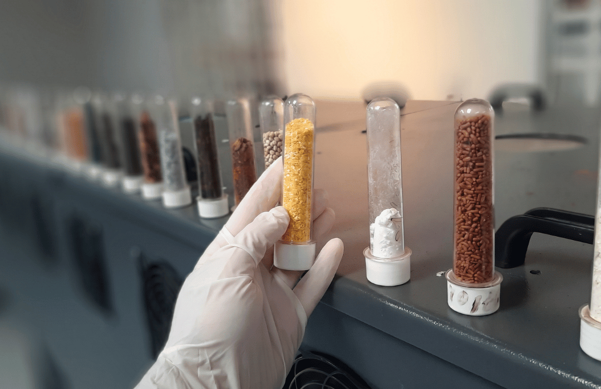
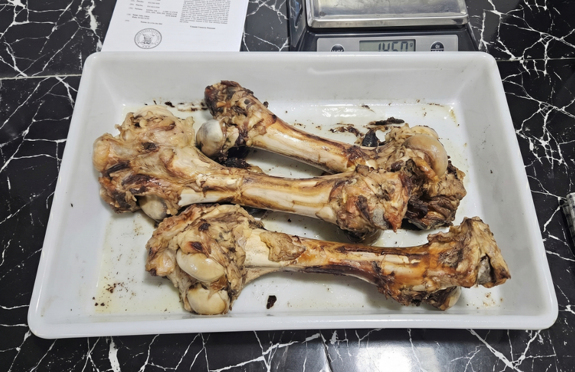
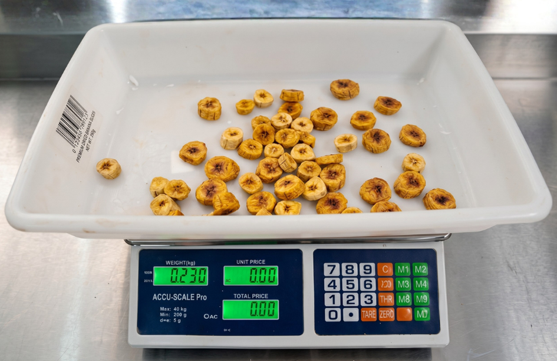
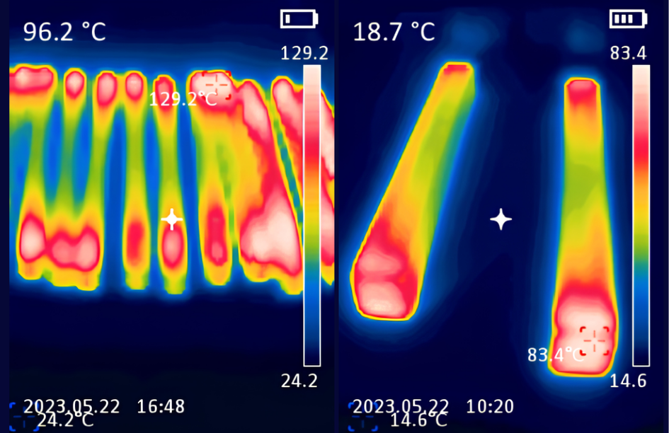
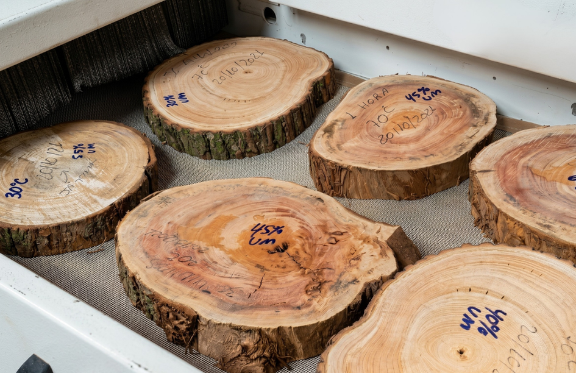

Gargalos de processo
A secagem por micro-ondas industrial pode ser utilizada em diferentes produtos e desafios de processo, especialmente quando a secagem convencional gera gargalos.
Aplicações industriais

A secagem por micro-ondas industrial pode ser utilizada em diferentes produtos e desafios de processo, especialmente quando a secagem convencional gera gargalos.
A tecnologia pode ser avaliada em operações com alto consumo de energia, necessidade de reduzir tempo de residência ou melhorar o aproveitamento energético.
Também pode contribuir quando há variação de umidade, perda de qualidade, baixa padronização entre lotes ou necessidade de maior previsibilidade no processo.
Produtos e segmentos

Secagem de snacks, ossos, carnes, ingredientes e produtos de alto valor agregado.
Indicada para reduzir tempo de residência, controlar umidade final e ampliar escala com mais padronização.
secagem lenta, umidade irregular e limitação de capacidade produtiva.

Soluções para produtos que exigem controle de umidade, textura, cor, aroma e qualidade final.
Pode ser avaliada para ingredientes, snacks, frutas, sementes, cereais, extratos e produtos sensíveis.
preservação de qualidade, controle térmico, redução de perdas e padronização.

Projetos sob medida para produtos técnicos, sensíveis ou de alta complexidade industrial.
Indicado para materiais fora do padrão, que exigem engenharia, testes e validação técnica.
produtos de alto valor, requisitos específicos e necessidade de solução customizada.

A tecnologia JODI pode ser aplicada a inúmeros produtos, desde matérias-primas industriais até materiais sensíveis e de alto valor.
Cada aplicação é avaliada tecnicamente para entender aderência, parâmetros de secagem e potencial de escala.
produtos fora de categorias convencionais, necessidade de teste e solução sob medida.
Validação da aplicação
A tecnologia de secagem por micro-ondas não deve ser aplicada de forma genérica. Cada produto responde de maneira diferente ao aquecimento, à remoção de umidade e à combinação entre micro-ondas e ar quente.
Por isso, antes de propor uma solução industrial, a JODI avalia tecnicamente a aplicação para entender se existe aderência entre o produto, o processo atual e os objetivos da operação.
Próximo passo
Fale com a JODI para entender se a tecnologia pode ser aplicada ao seu produto ou processo.